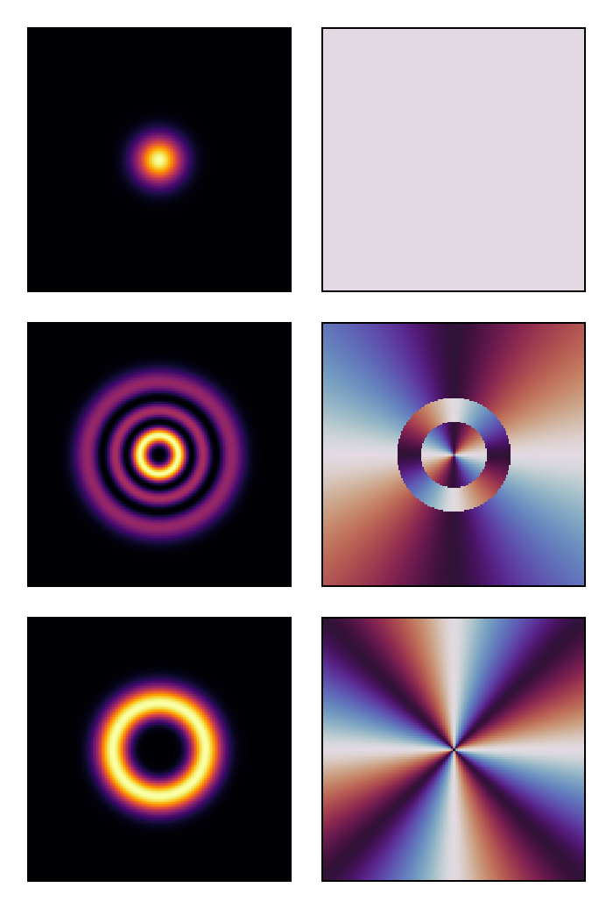
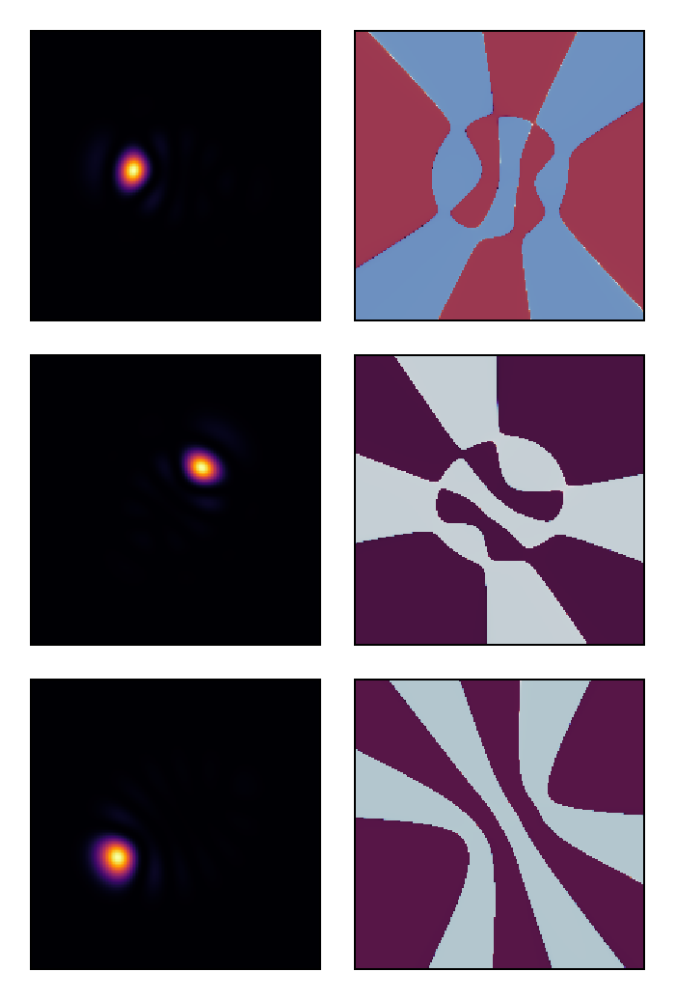
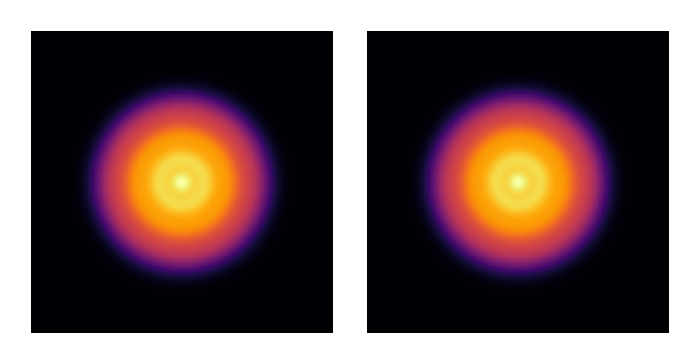
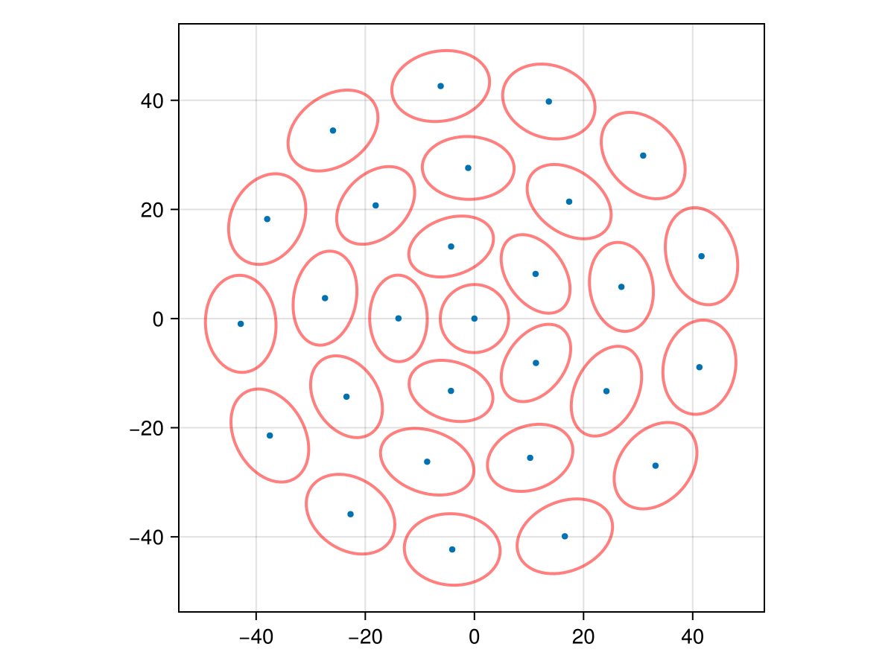
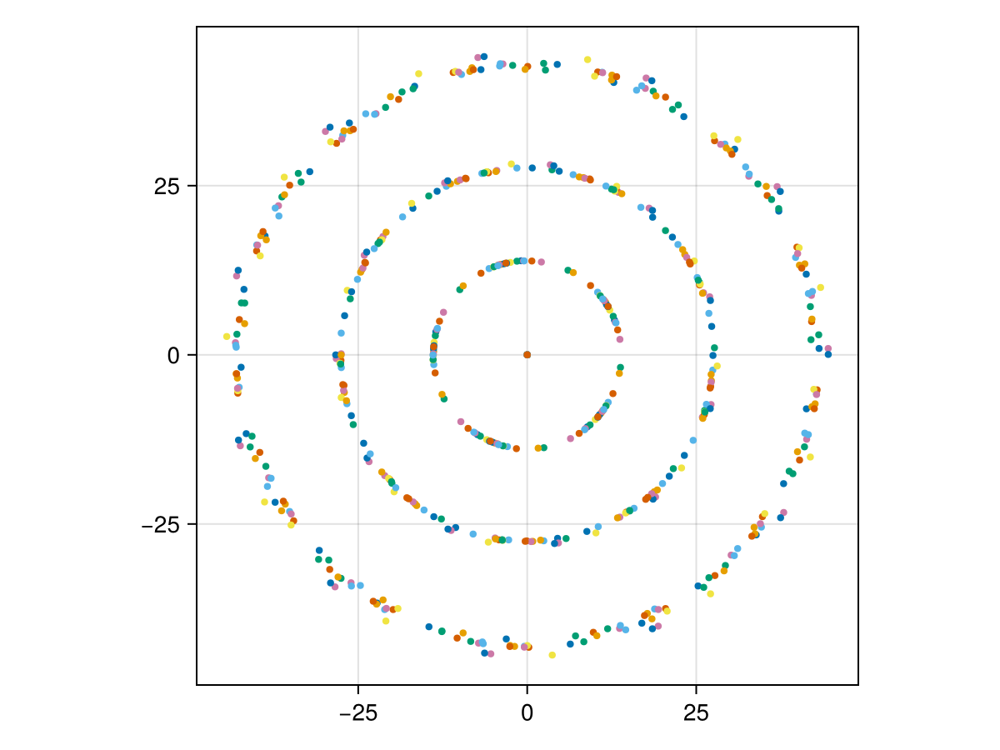

Maximally localized fiber modes
This tutorial demonstrates how to compute the Maximally Localized Fiber Modes (MLFM) of a multimode fiber using FluxOptics.jl. The idea is to find the unitary transformation of a given orthonormal mode set that minimizes the total spatial spread of the resulting modes. Both unitary_transform and spatial_variance are differentiable in FluxOptics, so the whole optimization can be driven by automatic differentiation without any manual gradient derivation.
This tutorial illustrates the method on a single case of N = 28 modes. A systematic study for N ranging from 6 to 55 modes, along with the theoretical analysis of the resulting ring geometries, is presented in:
N. Barré, "Maximally localized modes of a multimode fiber," arXiv:2604.04903 (2026).
using FluxOptics, Zygote, CairoMakie
using Random
Random.seed!(6); # Determinist exampleInput basis: Laguerre-Gaussian modes
We generate a basis of N Laguerre-Gaussian modes for a graded-index fiber. The modes are grouped by order and sorted by azimuthal index. We choose N = 28, which corresponds to complete LG mode groups up to order 6.
function generate_lg_basis(ns, ds, λ, w0, n_modes::Int)
x, y = spatial_vectors(ns, ds)
n_order = round(Int, sqrt(2 * n_modes)) - 1
orders = [(p, l) for p in 0:(n_order ÷ 2) for l in (2 * p - n_order):(n_order - 2 * p)]
sort!(orders, by = ((p, l),) -> (abs(l), p))
modes = stack(order -> LaguerreGaussian(w0, order...)(x, y), orders; dims = 3)
ScalarField(modes, ds, λ)
end
ns = (200, 200)
ds = (1.0, 1.0)
λ = 1.55
w0 = 25.0
n_modes = 28
u0 = generate_lg_basis(ns, ds, λ, w0, n_modes)
normalize_power!(u0);Let's visualize a few representative LG modes (intensity and phase):
visualize(vec(u0)[[1, 15, 21]], (intensity, phase);
colormap = (:inferno, :twilight_shifted), height = 150)
Optimization: finding the maximally localized basis
We parameterize the unitary transformation as U = exp((A - A†)/2), where A is an unconstrained complex matrix. This guarantees that U remains unitary throughout the optimization. The loss function is the total spread Ω = Σᵢ 2(vxᵢ + vyᵢ), where vx and vy are the spatial variances of each mode along x and y.
function find_mlm(u, rule, n_iter::Integer)
n_modes = size(u, 3)
A = similar(u.electric, (n_modes, n_modes))
copyto!(A, rand(ComplexF64, n_modes, n_modes))
function loss(A)
vx, vy = spatial_variance(unitary_transform(u, A))
2*(sum(vx) + sum(vy))
end
opt = FluxOptics.setup(rule, A)
for i in 1:n_iter
grads = Zygote.gradient(loss, A)
FluxOptics.update!(opt, A, grads[1])
end
unitary_transform(u, A)
endWe use FISTA with a small step size. A warm-up call compiles the gradient computation.
rule = Fista(0.008)
find_mlm(u0, rule, 2) # Warm-up
uf = find_mlm(u0, rule, 2000);Let's visualize a few modes of the localized basis:
visualize(vec(uf)[[1, 15, 21]], (intensity, phase);
colormap = (:inferno, :twilight_shifted), height = 150)
The total intensity is invariant under unitary transformation — we verify this:
visualize(((u0, uf),), intensity; colormap = :inferno, height = 150)
We can quantify the localization improvement by computing the ratio of total spreads:
spread_ratio = sum(sum(spatial_variance(u0))) / sum(sum(spatial_variance(uf)))The localized basis achieves a spread ratio of approximately 3.59× relative to the original LG basis, meaning the modes are nearly 4 times more spatially concentrated.
Bundle geometry: spot statistics
We compute the spatial statistics of each mode in the localized basis: centroid position, radial and azimuthal variances, and orientation angle. The radial and azimuthal variances are obtained by projecting the principal axes of the intensity ellipse onto the radial and azimuthal directions.
function spot_statistics(u::ScalarField{U, 2}) where {U}
cx, cy = spatial_centroids(u)
cx, cy = collect(cx), collect(cy)
r = sqrt.(cx .^ 2 .+ cy .^ 2)
θ = atan.(cy, cx)
v1, v2, α = spatial_variance(u; principal = true)
v1, v2, α = collect(v1), collect(v2), collect(α)
# Project principal axes onto radial direction to assign σ²_r and σ²_θ
er_x = cx ./ max.(r, 1e-10)
er_y = cy ./ max.(r, 1e-10)
e1_x = cos.(α)
e1_y = sin.(α)
dot_r = @. abs(e1_x * er_x + e1_y * er_y)
σ²_r = ifelse.(dot_r .> 0.5, v2, v1)
σ²_θ = ifelse.(dot_r .> 0.5, v1, v2)
return (; cx, cy, r, θ, σ²_r, σ²_θ, α)
endVisualization: bundle geometry with oriented ellipses
Each spot is represented by its centroid and an oriented ellipse whose semi-axes are proportional to the radial and azimuthal standard deviations.
function plot_bundle(stats...;
scale = 1.0,
show_variance = false,
figure = (;))
fig = Figure(figure...)
ax = Axis(fig[1, 1]; aspect = DataAspect())
for s in stats
scatter!(ax, s.cx, s.cy; markersize = 6)
if show_variance
for (x, y, σ²_r, σ²_θ, α) in zip(s.cx, s.cy, s.σ²_r, s.σ²_θ, s.α)
a = scale * sqrt(σ²_r)
b = scale * sqrt(σ²_θ)
t = LinRange(0, 2π, 64)
ex = @. x + a * cos(t) * cos(α) - b * sin(t) * sin(α)
ey = @. y + a * cos(t) * sin(α) + b * sin(t) * cos(α)
lines!(ax, ex, ey; color = (:red, 0.5), linewidth = 2.0)
end
end
end
fig
end
uf_stats = spot_statistics(uf)
plot_bundle(uf_stats; show_variance = true, scale = 0.5)
The spots spontaneously organize into concentric rings — here [1, 5, 9, 13] for N = 28 — without any geometric constraint being imposed. The ring structure emerges purely from the minimization of the spread functional.
Ring structure from multiple initializations
Since the optimization landscape is non-convex and the problem has a continuous rotational symmetry (the orientation of the bundle is a free parameter), different random initializations converge to rotated versions of the same solution. Running 20 independent optimizations and overlaying all solutions reveals the underlying concentric ring structure clearly.
stats = [spot_statistics(find_mlm(u0, rule, 2000)) for _ in 1:20]
plot_bundle(stats...)
This page was generated using Literate.jl.